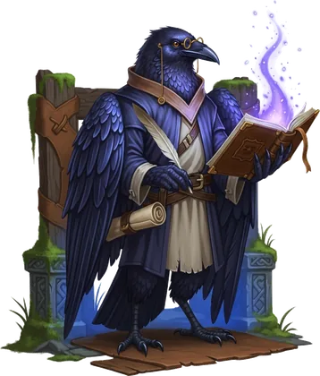
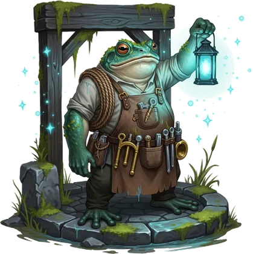
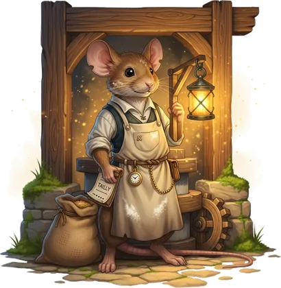

I
Davide Rovera
Co-founder · teaching lead
Entrepreneurship lecturer at Esade, adjunct professor at IAAC and Porto Business School, co-founder of Kili Ventures, and a Politecnico di Torino engineer.
Three people who teach for a living, and happen to be good at AI. One studio, two paths, three ways in — and the same conviction underneath all of it.
01 — Who we are
We work as one team on every engagement. No account layer, no hand-off — the people you meet first are the people who do the work.

I
Co-founder · teaching lead
Entrepreneurship lecturer at Esade, adjunct professor at IAAC and Porto Business School, co-founder of Kili Ventures, and a Politecnico di Torino engineer.


II
Co-founder · tech lead
Agile and AI coach, contract professor of Agile Project Management at the University of Turin, previously senior scrum master on a global Tetra Pak programme.


III
Co-founder · commercial lead
IT programme and project management at Intesa Sanpaolo, M.Sc. Management Engineering at Politecnico di Torino, and a run of companies founded along the way.
02 — What we do
We build new ventures with the people who will run them, and we rebuild how established companies work. Two studios, one bench, and three doors depending on where you actually are today.
03 — How we do it
The same four moves every time, whichever door you came through. We check before we build, and the way we work together is decided at the fork — not in the first meeting.
04 — Why we do it
We started this because we love teaching and we are good at AI. The literacy gap is still far too wide — and it is widest inside companies, where the cost of not knowing compounds quietly, month after month.
So we close it twice. We dig the well with people who are starting something, and we turn the mill for companies already running. Different scale, same job.
Talk to us
Spin the wheel to randomly write to one of the co-founders, or write to hello@tenm.studio.